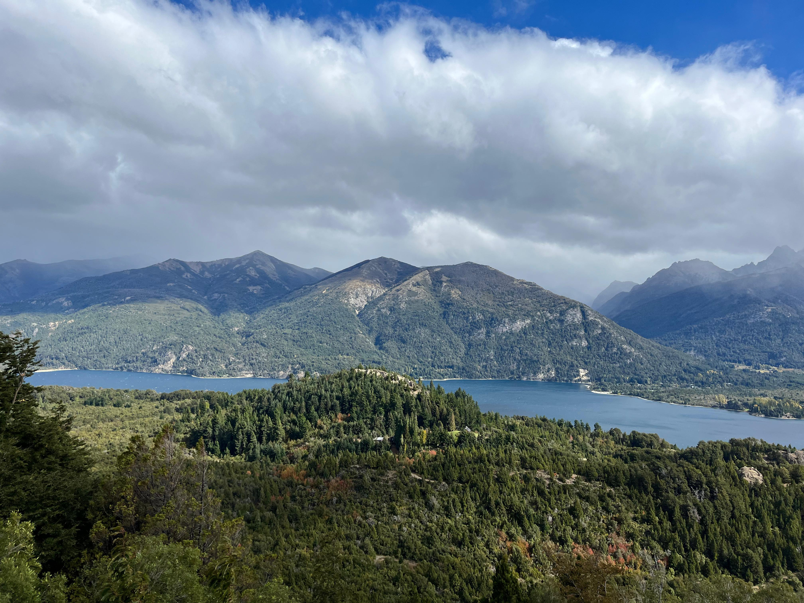

Cerro Campanario
Información:
Un cerro que se caracteriza por las impactantes vistas que ofrece desde su cumbre, que muchos diarios de viajes destacan como las “mejores del mundo”. Una serie de miradores nos permite asomarnos a paisajes excepcionales, con una perspectiva única en el mundo.
Desde el cerro Campanario se pueden observar los lagos Nahuel Huapi y Moreno, la laguna El Trébol, la península San Pedro, la isla Victoria, los cerros Otto, López, Goye, Bellavista, Catedral, Capilla, el hotel Llao Llao y las arboledas de Colonia Suiza.
Además, en su cumbre hay una confitería para que te deleites con la mejor repostería casera, platos del día, bebidas e infusiones, mientras ves el mundo a través de un grandioso ventanal orientado hacia el oeste.

Por su ubicación, el cerro Campanario puede ser incluido dentro de la excursión del Circuito Chico. También se puede ir hasta la base con vehículo propio (tomando por la avenida Bustillo hasta el Kilómetro 17 500) o con el servicio de transporte urbano de pasajeros. El ascenso puede realizarse en aerosillas o caminando. La aerosilla te lleva hasta la cima en unos 7 minutos. Hacerlo a pie es una buena opción, dado que el cerro no es muy alto. La cumbre está a unos 1050 metros sobre el nivel del mar. El ascenso dura aproximadamente unos 30 minutos, por un sendero que atraviesa el bosque. ¡Es un paseo estupendo!